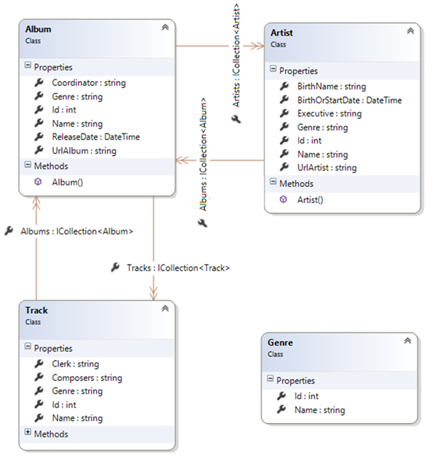
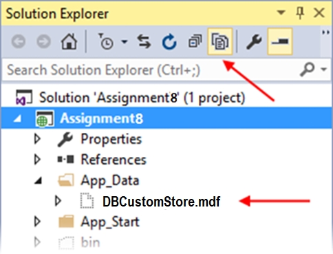
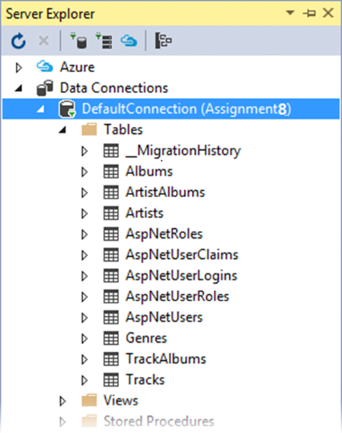
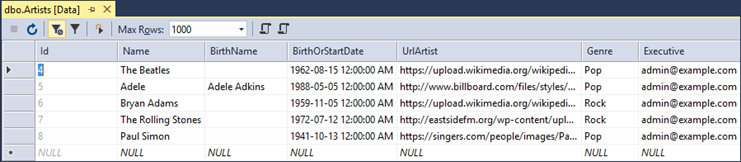

INT422 Assignment 8
Build a data model. Implement security. Post to a public web server.
Read/skim all of this document before you begin work.
Due date
Section A: Tuesday, April 3, 2018, 11:59pm
Grade value: 8% of your final course grade
If you wish to submit the lab before the due date and time, you can do that.
Objective(s)
Build a data model. Implement security. Post to a public web server.
Introduction to the problem to be solved
The app serves the needs of companies in the music business. We need an app that will enable a record label to manage their artists, albums, and tracks.
For this app, it will be helpful to know that people who work at a record label have various responsibilities, roles, and job duties. We will focus on three job titles, and enable each to perform a selection of tasks in the app:
Executive – Also known as an “artists & repertoire” (A&R) executive, manages the talent acquisition and management process.
Coordinator – Oversees or coordinates the work on an album, all aspects and phases.
Clerk – Supports the coordinator and executive, during the time that the artist makes progress on an album.
Specifications overview and work plan
Here’s a brief list of specifications that you must implement:
Here is a brief work plan sequence:
Get started on the assignment during the week. Your professor will help you make progress on this assignment. There will be in-class grading during the class/session.
Create the project, based on the project template
Create a new web app, must be named Assignment8.
It MUST use the new “Web app project v2” project template. Get this new project template from the course site, and install it into your Visual Studio configuration.
After creating the web app, customize the home page. Change the large “Learn more >>” button to “Assignment 8 on Azure” and set the button link to the URL of your assignment 8 on Azure,
Warning: Your teachers believe that the best way to work through this assignment is to do incrementally. Get one thing working, before moving on to the next. Test each part.
Customize the app’s appearance
You will customize the appearance all of your web apps and assignments. Never submit an assignment that has the generic auto-generated text content. Make the time to customize the web app’s appearance.
For this assignment, you can defer this customization work until later. Come back to it at any time, and complete it before you submit your work.
Follow the guidance from Assignment 1 to customize the app’s appearance.
Create the design model classes
In the Models folder, there is an empty DesignModelClasses.cs source code file.
Add design model classes to this source code file. You will need:
Follow the guidance about rules/conventions from week 8 lecture notes, when writing design model classes:
Following these rules/conventions will ensure that the database is initialized and configured correctly, and will improve the quality of other coding tasks as you build the app.
Here’s an image of the completed data model, from the “class diagram” feature in Visual Studio:

A few notes about the design model classes, and how they model the real world:
Associations
Artist has a to-many with Album, as you would expect. An artist can have many albums.
In our model, an Album has a to-many with Artist. This means that more than one artist can work on an album. This often happens with collaborations or duets.
Album has a to-many with Track, as you would expect. An album can have many tracks.
In our model, a Track has a to-many with Album. This means that a track can appear on more than one album. This often happens when an artist releases a “greatest hits” album.
❝Real world notice:
In the real world, an artist could be a group. For example, The Beatles. Every group will obviously have members. For example, John, Paul, George, and Ringo were in The Beatles. Therefore, for a really real-world implementation of the artist entity, we really should have a self-referencing to-one association (e.g. John is a member of The Beatles), and we really should have a self-referencing to-many association property (e.g. The Beatles have a collection of members, John, Paul, George, and Ringo).
However, we are not asking you to implement this design feature. We are deliberately limiting the scope of this assignment. Although it would be fun to do.
Artist
In the music business, an artist can be an individual person (e.g. Adele), or an artist can be a duo, group, band, orchestra, etc. (e.g. Florida Georgia Line).
The “Name” property is the artist’s name:
The “BirthName” property is used only for a person who uses a stage name. For example “Alecia Beth Moore” is the birth name of “P!nk”.
The “BirthOrStartDate” property is used this way:
The “UrlArtist” property will hold a URL to a photo of the artist. You can find a URL for an artist almost anywhere, including:
The “Genre” property holds a genre string/value. In the user interface, when creating a new artist object, the available genres will be shown in an item-selection element.
The “Executive” property holds the user name (e.g. amanda@example.com) of the authenticated user who is in the process of adding a new artist object.
❝Warning:
Do NOT make associations with the security classes, from your own design model classes.
Instead, use the security APIs.
For example, assume that you need to keep track of a user name in an entity (for whatever reason). Here’s how to approach this task:
· Get the user name (i.e. email address) from the current execution context (User property in the controller, or HttpContext.Current.User property in the manager object)
· Or use the security API to fetch/lookup the desired user and get its user name; we may learn a bit more about using the security API in the near future
· Store that value as a non-associated string property, in your entity
The user name (email address) is GUARANTEED to be unique, so it can safely be used.
Album
The “UrlArtist” property will hold a URL to an image of the album. You can find a URL for an album almost anywhere, including:
The “Genre” property holds a genre string/value. In the user interface, when creating a new album object, the available genres will be shown in an item-selection element.
The “Coordinator” property holds the user name (e.g. amanda@example.com) of the authenticated user who is in the process of adding a new album object.
Track
The “Composers” property holds the names of the track’s composers. It is a simple string property. The browser user will simply use comma separators between the names of multiple composers.
The “Genre” property holds a genre string/value. In the user interface, when creating a new track object, the available genres will be shown in an item-selection element.
The “Clerk” property holds the user name (e.g. amanda@example.com) of the authenticated user who is in the process of adding a new track object.
Create view models and mappers that cover the initial use cases
In the specifications list above, you saw the following:
Therefore, you will need view models (and mappers) that support these use cases. We suggest that you use the following procedure to assemble the “add new” view model classes:
Associated data
When adding a new artist, we will not need to configure an associated album.
When adding a new album, we WILL need to configure an associated artist. As a starting point, assume that it will work the same as it does in the “Associations Add Edit” code example, where a vehicle could be added while working with a manufacturer. Here, we will be adding an album for a known artist. However, we will also allow the browser user to select other artists, if any. Therefore, add a string property to display the name of the known associated artist, and a multi select list property for all artists. Later, in the controller, we will pre-select the known artist, when we create the MultiSelectList object.
Similarly, when adding a new track, we WILL need to configure an associated album. Assume that it will work in a way similar to above, where we will be adding a track for a known album. Do not allow the browser user to select the album. Therefore, add properties to the TrackAddForm and TrackAdd view model classes that enable you to display information about the associated album, and configure its identifier as a hidden HTML Forms element.
Other considerations
It should be obvious by now that you will also need view models for the “get all” and “get one” use cases, because these are always needed.
Yes, you will need some view model classes that include associated data for display purposes. Carefully plan this step. You can use a mix of techniques, including composed properties, or by including associated objects or collections. Don’t worry about getting this step perfect for the interim progress submission. You can modify these classes before the final submission.
Each entity has a “Genre” property. Therefore, you will need to support the “get all” use case for the Genre entity too. (We will not need to support “get one”, because the destination for the “get all” use case will be an item-selection element in the user interface. We will not need to support “add”, “edit”, or “delete”, because you will programmatically build and load the genre data.)
At this point in time, you will have written your design model classes, view model classes, and mappers. Make sure the project builds/compiles without errors. Demonstrate this partially-completed project in the lab sessions.
Configure the security settings for the app
After writing the design model classes and the view model classes, you have a pretty good idea about the tasks that could be done with the data. Therefore, let’s think about, design, and configure the security settings for the app.
The most important task is to identify the “role claims” we will need in the app. Then, you can edit the Register() method in the account controller to match. We suggest that you will need these role claims:
The next step is to register some new user accounts. The safest internet top-level domain name to use is “example.com”, because it is not processed by the internet’s DNS infrastructure. Please use the same password for all accounts (for example, Password123!), so that your teacher team can run and test the app with each account.
Role claims can be hierarchical in nature, or not. It depends upon the situation. For this app, we will pay attention to that.
For example, a user account for an executive (maybe named exec@example.com) should be configured with the Executive, Coordinator, and Staff role claims.
A user account for a coordinator (maybe named coord@example.com) should be configured with the Coordinator, Clerk, and Staff role claims.
A user account for a clerk (maybe named clerk@example.com) should be configured with the Clerk and Staff role claims.
Finally, a user account for a person who is NOT directly involved in the A&R chain (e.g. receptionist, payroll clerk, tech support, etc.) should be configured only with the Staff role claim.
Add methods to the Manager class that handle the use cases, and load initial data
Let’s begin by loading initial data. Real data, not crappy data (e.g. we NEVER want to see “aaaa” “1234” etc.).
We need initial data for all entities – genre, artist, album, and track.
Create one or more methods that load initial data for each entity.
When you are coding the Add() methods for artist, album, and track, you will need the name of the current authenticated user for setting the value of the property Executive, Coordinator or Clerk. Therefore – just a suggestion – fetch that value into a temporary variable, just to simplify your coding task.
A special-purpose or temporary throw-away controller can be used to call these methods. We suggest that you protect that controller/method, so that only the “admin@example.com” user can load the data. (If you use a temporary throw-away controller, leave it in your project when you submit it, so that it can be inspected and graded.)
Initial data – genres
Open up your iTunes app (or any other digital music app). Identify ten genres.
Add these ten genres to the data store (and save changes).
Note – When you are adding artists, albums, and tracks (below), you must enter a genre. To make your coding task easier, you can use simple strings. Make sure that you use the exact same string (upper/lower case etc.).
Initial data – artists
Identify three of your favourite artists in the music business. Try to choose a combination of individual artists and duo/group/band artists, so that you can uniquely configure some of the name / birth name / birth or start date properties.
If you need information, Wikipedia is often a pretty good source for data about an artist (or album or track).
Add these three artists to the data store (and save changes).
Initial data – albums
Select one of your just-added artists from above.
To add an album, you must specify its artist. Therefore, fetch the artist object from the data store. For example:
var john = ds.Artists.SingleOrDefault(a => a.Name == "John Legend");
Next, for the artist, identify two of their albums.
Add each of these two albums to the data store. Notice that an album has an Artists property, which is a collection of artist objects. Logically, when adding a new album, the collection is empty (duh), so that we do not have to worry about overwriting it and losing data. As a result, we can simply create a new artist collection, which has one artist object only, which is our selected artist. For example:
|
|
ds.Albums.Add(new Album { Artists = new List<Artist> { john }, Name = "Love in the Future", // etc. |
Save changes.
Initial data – tracks
For both albums (above), identify five tracks on each album.
Add these ten tracks to the data store (and save changes).
Similar to the album-add task (above), you will need a reference to the album object as you add each track. Therefore, plan to fetch the album object from the data store before you add tracks.
Check your progress
If you have correctly-defined your design model classes, and correctly done the data loading, the database will exist, and have data.
If you’re careful, you can open the database, and check your progress. How?
First, in Solution Explorer, select/highlight the “Assignment8” project item.
On the toolbar, choose Show All Files.
Open (reveal) the contents of the App_Data folder. It will show “DBCustomStore.mdf”. This is the file that’s used to hold the contents of the database.

Double-click it, and it will open on the left-side “Server Explorer” panel.
Look for the item named “DefaultConnection (Assignment8)”. Open (reveal) the contents of the Tables folder.

Notice several things:
You can right-click any of these tables, and choose “Show Table Data”, to show the data in a grid in the Visual Studio editor area.

Very important: When you’re done looking, right-click “DefaultConnection (Assignment8)”, and choose “Close connection”. If you do not do this, then some of your future coding and testing tasks will fail.
Uh oh – data loading problems
If your data did not load correctly, then you should remove the data, fix the coding problem, and attempt to load the data again.
How to remove the data?
Create another method in the Manager class for this purpose. (Later, you will call this method from a controller action/method.)
Remove ALL the objects in each entity collection. Here’s an example of how you would do this for the track entity collection; you would repeat this code for the other entity collections:
|
foreach (var e in ds.Tracks) { ds.Entry(e).State = System.Data.Entity.EntityState.Deleted; } ds.SaveChanges(); |
Note: There are other ways to remove objects. This is the way that your teacher team recommends at this time.
Arg – the database is really messed up – I want to delete it and start again
Maybe your data items are messed up. Maybe the design model classes are wrong. Maybe there are just too many little problems, and they’re preventing progress.
You’re thinking “I want to delete the database and start fresh”. Here’s how:
The data context has a database Delete() method. Be careful. With great power, there is great responsibility.
Deletes the database on the database server if it exists, otherwise does nothing.
Calling this method from outside of an initializer will mark the database as having not been initialized. This means that if an attempt is made to use the database again after it has been deleted, then any initializer set will run again and, usually, will try to create the database again automatically.
We suggest that you add another method to the Manager class (which can then be called from a controller action/method). Its code:
|
|
public bool RemoveDatabase() { try { // Delete database return ds.Database.Delete(); } catch (Exception) { return false; } } |
After the database delete task, run the data load task again.
Next, let’s code the methods that support the app’s data service tasks:
Genre – get all
Easy. Get all, return as a sorted/ordered collection of GenreBase objects.
Artist – get all, get one (with detail), add new
The initial goal with “get all” is to simply return a sorted/ordered collection of ArtistBase objects.
Maybe later you can modify that, to return artist objects that have some associated data, in the form of objects and/or composed properties.
The initial goal with “get one” is to return an artist object that does have some associated data. Study the associated album entity, and decide what would be good to return, and then make it happen.
For the “add new” use case, treat it like any other “add new” situation. Don’t worry about associated data when adding an artist. Treat it as the most important object in the Artist-Album-Track interrelationship, so an artist object must always be created before we create an album (or track) object.
However, please note that you must configure the Executive property (in the added Artist object) with the user name of the current security principal (i.e. authenticated user). Otherwise, the SaveChanges() method will fail, because an empty Executive property will not pass validation.
Album – get all, get one (with detail), add new
The initial goal with “get all” is to simply return a sorted/ordered collection of AlbumBase objects.
Maybe later you can modify that, to return album objects that have some associated data, in the form of objects and/or composed properties.
The initial goal with “get one” is to return an album object that does have some associated data. Study the associated album entity, and decide what would be good to return, and then make it happen. It’s in the “middle” of two associations (to artist, and to track), so seriously consider including data from both.
The “add new” use case will probably be the most challenging to handle.
When adding a new album, we will assume that we’re currently working with – and have a reference to – an existing known artist object. Therefore, we must have that reference, and handle that data configuration task.
We will also allow other artists to be selected in the user interface, and therefore configured in this Manager class method. As a result, you will expect to get a collection of int values (artist identifiers), each of which must be validated and configured.
Finally, we will allow tracks to be selected in the user interface, and therefore configured in this Manager class method. As a result, you will expect to get a collection of int values (track identifiers), each of which must be validated and configured.
Like the artist entity above, please note that you must configure the Coordinator property (in the added Album object) with the user name of the current security principal (i.e. authenticated user). Otherwise, the SaveChanges() method will fail, because an empty Coordinator property will not pass validation.
Here’s a coding plan that you can follow for the “add new” album method in the Manager class:
|
|
// Assume that the name of the incoming AlbumAdd parameter/argument is "newItem"
// Validate each of the associated artists: // Create a new empty collection of Artist objects // For each artist ID in newItem.ArtistIds // Find the artist by its ID // If found, add it to the collection of Artist objects
// Validate each of the associated tracks: // Create a new empty collection of Track objects // For each artist ID in newItem.ArtistIds // Find the artist by its ID // If found, add it to the collection of Track objects
// Continue only if there is at least one associated artist object
// Attempt to add the new album
// For each associated artist // Add it to the new album's Artists collection
// For each associated track // Add it to the new album's Tracks collection
// Set the Coordinator user name property
// Save changes // Return the new album |
Track – get all, get one (with detail), add new
The initial goal with “get all” is to simply return a sorted/ordered collection of TrackBase objects.
Maybe later you can modify that, to return artist objects that have some associated data, in the form of objects and/or composed properties.
The initial goal with “get one” is to return a track object that does have some associated data. Study the associated album and artist entities, and decide what would be good to return, and then make it happen.
The “add new” use case will be much easier than album above, but not as easy as artist above. When adding a new track, we will assume that we’re currently working with – and have a reference to – an existing known album object. Therefore, we must have that reference, and handle that data configuration task. Expect to get a single int value (album identifier), which must be validated and configured.
Like the artist entity above, please note that you must configure the Clerk property (in the added Album object) with the user name of the current security principal (i.e. authenticated user). Otherwise, the SaveChanges() method will fail, because an empty Clerk property will not pass validation.
Add the Artist controller, implement the use cases, including views
Add the Artist controller. Protect it so that only authenticated users can use its actions/methods.
Get all
Handling the “get all” use case is familiar, and has no surprises.
Here’s what your initial result may look like. Click the image to open it full-size in a new tab/window.
The page title needs fixing, and the URL text is ugly. Why not rewrite that part of the view to render an HTML <img> element? Here’s what it could look like. Click the image to open it full-size in a new tab/window.
Get one
Handling the “get one” use case is familiar, and has no surprises.
Here’s what your initial result may look like. Click the image to open it full-size in a new tab/window.
The page title needs fixing, and the URL text is ugly. As above, why not rewrite that part of the view to render an HTML <img> element? Here’s what it could look like. Click the image to open it full-size in a new tab/window.
Add new
Handling the “add new” use case is familiar, and has no surprises. Just a few things to consider.
First, as noted earlier, the “add new” pair of methods must be protected with an authorize attribute which allows only those with the Executive role claim to run the code.
Next, in the GET method, the “…AddForm” object must be created, and the select list object configured, before the object is passed to the view.
In the view, you must add the code to render an single-selection item selection element (e.g. dropdown list, or radio button group). And fix the title etc.
Here’s what your initial result may look like. Click the image to open it full-size in a new tab/window.
In the POST method, handle the user-submitted data as you have done before.
After successfully adding the new artist object, redirect to the details view for the new artist object.
Add the Album controller, implement the use cases, including views
Add the Artist controller. Protect it so that only authenticated users can use its actions/methods.
Get all
Handling the “get all” use case is familiar, and has no surprises.
Here’s what your initial result may look like. Click the image to open it full-size in a new tab/window.
The page title needs fixing, and the URL text is ugly. As above, why not rewrite that part of the view to render an HTML <img> element? Here’s what it could look like. Click the image to open it full-size in a new tab/window. Click the image to open it full-size in a new tab/window.
Get one
Handling the “get one” use case is familiar, and has no surprises.
In the view, fix the title etc. Also, use an HTML <img> element to render the album image / cover art. Here’s what your initial result may look like. Click the image to open it full-size in a new tab/window.
It’s not perfect. Why? Well, do you see the artist’s name? No. We could fix that later.
Add new – GET method
As noted above, this will be the most challenging to implement.
When adding a new album, we WILL need to configure an associated artist. As a starting point, assume that it will work the same as it does in the “Associations Add Edit” code example, wherea vehicle could be added while working with a manufacturer.
In that code example, you learned that the code to add a new vehicle was in the manufacturer controller.
❝Note: It would probably be a good idea to have that code example open, so that you could remind yourself about the design technique and coding style.
We will follow that example here. So, switch over to the artists controller. We will create the “add new” album method pair in the artists controller.
As noted earlier, the “add new” album pair of methods must be protected with an authorize attribute which allows only those with the Coordinator role claim to run the code.
Create an AddAlbum(int? id) method. Use attribute routing; the
route should be:
artist/{id}/addalbum
Next, a quick detour: The project template unfortunately does not include the command that activates attribute routing. You must add it. How? Open the App_Start > RouteConfig.cs source code file. In the RegisterRoutes() method, add this statement:
|
routes.MapMvcAttributeRoutes(); |
Next, write code to get/fetch the associated artist object, based on the “id” method parameter. In code, if the object exists, there are several tasks to complete.
First: Create a new AlbumAddForm.
Second: Configure the artist name. Your AlbumAddForm should have a string property for that.
Third: Configure the select list object for the genres.
Fourth: Configure the multi select list object for the artists. Remember, we are adding an album for the current known artist. However, we will allow the user to select other artists too.
Therefore, we will configure the multi select list object with the current known artist identifier, as the selected value. The multi select list object constructor takes a collection of selected values, so you’ll have to package the current known artist identifier inside a new collection.
❝Hint: Look at any of the code examples we have done, and the code that you have written, to remind yourself about the suggested way to code/configure a multi select list object. For example, look at this controller, starting at line 75.
Fifth: Configure the multi select list object for the tracks.
Add new – view
Generate the view.
Run the web app, and then attempt to display this new view. Here’s what your initial result may look like. Click the image to open it full-size in a new tab/window.
To allow a browser user to navigate to the view, we suggest adding a hyperlink to the “Artist detail” view, which will point to this new view. This makes sense, because we are starting at a specific known artist, and adding a new album for that artist.
Another fix-up, on the list-of-albums view: Comment out or remove the “Create new album” hyperlink.
Now, look at the generated “add new” album view. It does not have any of the select list items. Or a title. So, fix these problems:
Change the title so that it’s useful.
Add the code to render the genres dropdown list.
Add the mult select list code for the artists check box group. Add another for the tracks check box group.
❝Hint:
Use the Bootstrap row class to position the check box groups beside each other.
Offset the left-side group by 2 (which is the standard width of the form label area), and the right-side group by 1 (to create some space between). If you want to shade their backgrounds, use the well class.
You may end up with a result that looks like this. Click the image to open it full-size in a new tab/window.
Add new – POST method
This method will be similar to almost all other “add new” POST methods that you have written.
After model state validation, it will call a method in the manager object, and pass on the user-submitted data.
After a successful result, it will redirect to the details view for the new album.
Add the Track controller, implement the use cases, including views
Add the Track controller. Protect it so that only authenticated users can use its actions/methods.
Get all
Handling the “get all” use case is familiar, and has no surprises.
Here’s what your initial result may look like. Click the image to open it full-size in a new tab/window.
As is typical, there are a few things wrong with this list. We can fix some easily. So, fix the title, and remove (comment out) the “Create New” hyperlink. (The “add new” track feature will be linked from an album details page.) The AlbumId is useless on this “get all” list, so remove that data.
Get one
Handling the “get one” use case is familiar, and has no surprises.
Here’s what your initial result may look like. Click the image to open it full-size in a new tab/window.
The title is ugly, so it must be fixed. Also, it would be nice for the tracks to include some album name information. For example, see below. Click the image to open it full-size in a new tab/window.
Here’s how to make that happen.
First, in the TrackWithDetail view model class, add a collection-of-strings property (maybe named AlbumNames), which will hold the names of the albums with this track.
Next, modify the Manager class “get one” track method.
You have learned to code it in this general way:
|
var o = ds.Tracks.Include("Albums.Artists").SingleOrDefault(t => t.Id == id); return (o == null) ? null : mapper.Map<Track, TrackWithDetails>(o); |
However, with this code, we do not get the opportunity to set the value of the AlbumNames collection. So, let’s rewrite the method:
|
var o = ds.Tracks.Include("Albums.Artists").SingleOrDefault(t => t.Id == id);
if (o == null) { return null; } else { // Create the result collection var result = mapper.Map<Track, TrackWithDetails>(o); // Fill in the album names result.AlbumNames = o.Albums.Select(a => a.Name);
return result; } |
Now, in the view, you will have a collection of strings in the AlbumNames property, which you can render in a foreach loop or whatever.
❝Note: Remember back in the album details section, where we stated that it would be nice to show the album artist(s) with the album details? You could fix that now, if you wish, using this same procedure.
Add new – GET method
When adding a new track, we WILL need to configure an associated album. As a starting point, assume that it will work the same as it did above (add an album for an artist), and also as it does in the “Associations Add Edit” code example, whereas vehicle could be added while working with a manufacturer.
We will follow the same pattern. Switch over to the albums controller. We will create the “add new” track method pair in that controller.
As noted earlier, the “add new” track pair of methods must be protected with an authorize attribute which allows only those with the Clerk role claim to run the code.
Create an AddTrack(int? id) method. Use attribute routing; the
route should be:
album/{id}/addtrack
Next, write code to get/fetch the associated album object, based on the “id” method parameter. In code, if the object exists, there are several tasks to complete.
First: Create a new TrackAddForm.
Second: Configure the album name. Your TrackAddForm should have a string property for that.
Third: Configure the album identifier. Your TrackAddForm should have an int property for that.
Fourth: Configure the select list object for the genres.
Add new – view
Generate the view.
Run the web app, and then attempt to display this new view. Here’s what your initial result may look like. Click the image to open it full-size in a new tab/window.
To allow a browser user to navigate to the view, we suggest adding a hyperlink to the “Album detail” view, which will point to this new view. This makes sense, because we are starting at a specific known album, and adding a new track for that album.
Another fix-up, on the list-of-tracks view: Comment out or remove the “Create new track” hyperlink.
Now, look at the generated “add new” track view. It does not have the item-selection element. Or a title. It also displays data in editable fields. So, fix these problems:
Change the title so that it’s useful.
Add the code to render the genres dropdown list.
We need the album identifier, but we must not display it. Therefore, inside the HTML Form code in the view source code file, add code to keep it around as an HTML input field that’s hidden.
|
@Html.Hidden("AlbumId", Model.AlbumId) |
You may end up with a result that looks like this. Click the image to open it full-size in a new tab/window.
Add new – POST method
This method will be similar to almost all other “add new” POST methods that you have written.
After model state validation, it will call a method in the manager object, and pass on the user-submitted data.
After a successful result, it will redirect to the details view for the new track.
Optional – solving a problem with “add new” album
You may have noticed that the “add new” album task will display ALL tracks in the data store.
That does not make sense, because the “add new” album task is always done for a specific artist. We should display only the artist’s tracks.
We can fix this by writing one more method in the Manager class. It will be called when you create/configure the multi select list in the albums controller. Here’s the code:
|
public IEnumerable<TrackBase> TrackGetAllByArtistId(int id) { // Fetch the artist var o = ds.Artists.Include("Albums.Tracks").SingleOrDefault(a => a.Id == id);
// Continue? if (o == null) { return null; }
// Create a collection to hold the results var c = new List<Track>();
// Go through each album, and get the tracks foreach (var album in o.Albums) { c.AddRange(album.Tracks); }
// Remove duplicates c = c.Distinct().ToList();
return mapper.Map< IEnumerable<Track>, IEnumerable < TrackBase > >(c.OrderBy(t => t.Name)); } |
Publish to Azure
Follow the guidance in this document to deploy/publish your web app to Azure:
https://scs.senecac.on.ca/~wei.song/int422/assignments/INT422-Assignment7.html
Please note that you may have to create a new database server. And you need to create a new SQL Database.
You may need to delete the items that is longer needed For example, if you have your assignment 7 marked already, you can remove the web app server, database server and database used for assignment 7 on Azure.
Suggested names, assuming that your Microsoft Account name uses the recommended format “wsong18-wa2017”:
Web app: wsong18-wa2018a8
Database server: wsong18-ds2018a8
Database: Assign8Store (or A8Store)
Testing your work
While designing and coding your web app, use the Visual Studio debugger to test your algorithms, and inspect the data that you are working with.
In a browser, test your work, by doing tasks that fulfill the use cases in the specifications.
Reminder about academic honesty
You must comply with the College’s academic honesty policy. Although you may interact and collaborate with others, you must submit your own work.
Important note
You MUST use the provided “Web app project v2” project template and AutoMapper instance API for your assignment. Failure to do so will result in a huge penalty (failing grade) for the assignment.
Submitting your work
Here’s how to submit your work, before the due date and time:
1. Locate the folder that holds your solution files. In Solution Explorer, right-click the “Solution” item, and choose “Open Folder in File Explorer”. It has three (or more) items: a Visual Studio Solution file, a folder that has your project’s source code, and a “packages” folder. Go UP one level.
2. Make a copy of the folder. This is the version that you will be uploading.
3. Remove the “packages” folder from the copied folder; also, remove the “bin” and “obj” folders.
4. Compress/zip the copied folder. The zip file SHOULD be about 2MB or less in size. If it isn’t, you haven’t followed the instructions properly.
5. Login to My.Seneca/Blackboard. Open the Web Programming on Windows course area. Click the “Assignments” link on the left-side navigator. Follow the link for this lab. Submit/upload your zip file. The page will accept three submissions, so if you upload, then decide to fix something and upload again, you can do so.
{kind=link}
{kind=link}
{kind=link}
{kind=link}
{kind=link}
{kind=link}
{kind=link}
{kind=link}
{kind=link}
{kind=link}
{kind=link}
{kind=link}
{kind=link}
{kind=link}
{kind=link}